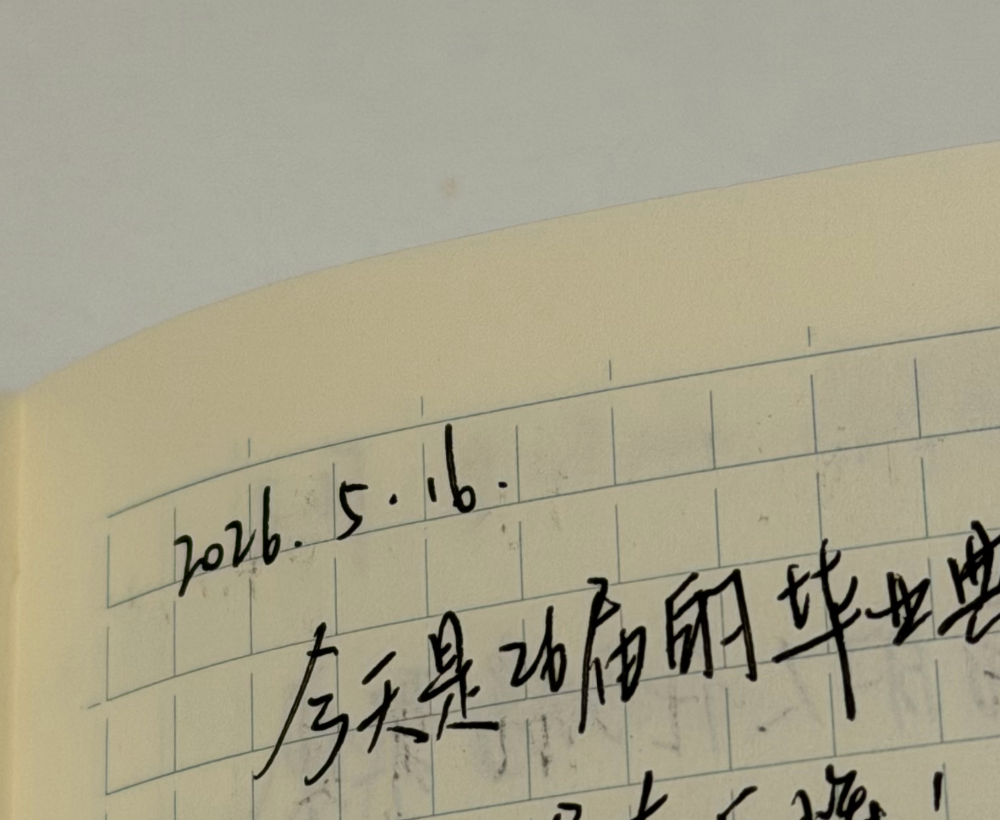

COLLECTION 006 / ITEM 05
Vintage Notebook
- Material
- paper, ink
- Manufacturer
- Midori
- Time
- 2026
The object contains handwritten records of daily activities and personal thoughts, dating back to 2026. Most entries are written in Chinese, suggesting that the owner was likely a Chinese speaker. Although personal journaling remains common today, most records are now created and stored directly through neural interfaces. The use of physical paper and handwriting appears highly outdated. Ocular scanning recovered fragments of the text, but some entries remain unreadable due to material deterioration. The notebook was likely used to document personal experiences and reflections. Together with the humanoid figure found in the suitcase, the notebook suggests that the owner may have had connections to different cultural and geographical environments.

